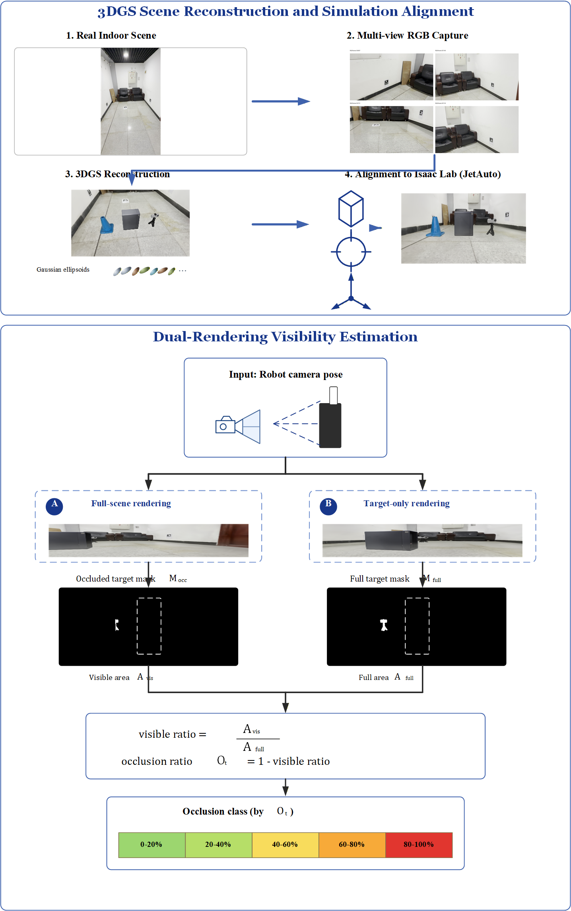
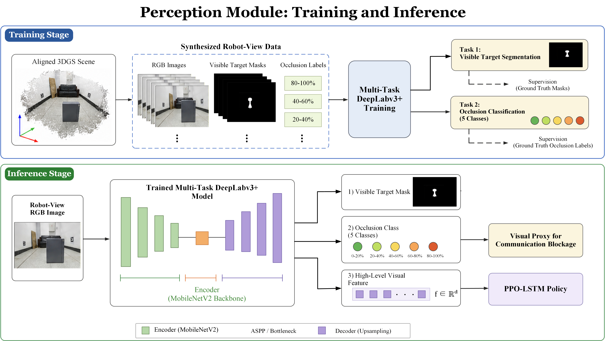
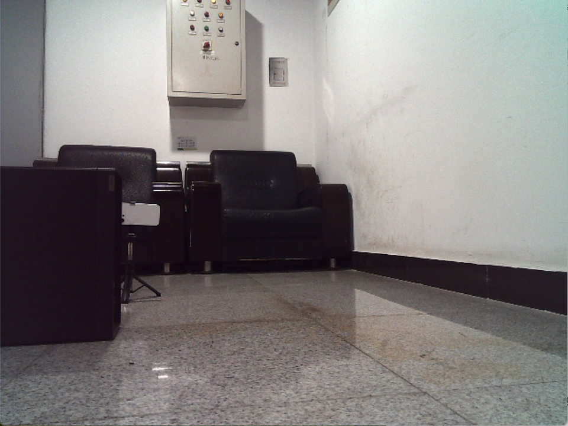
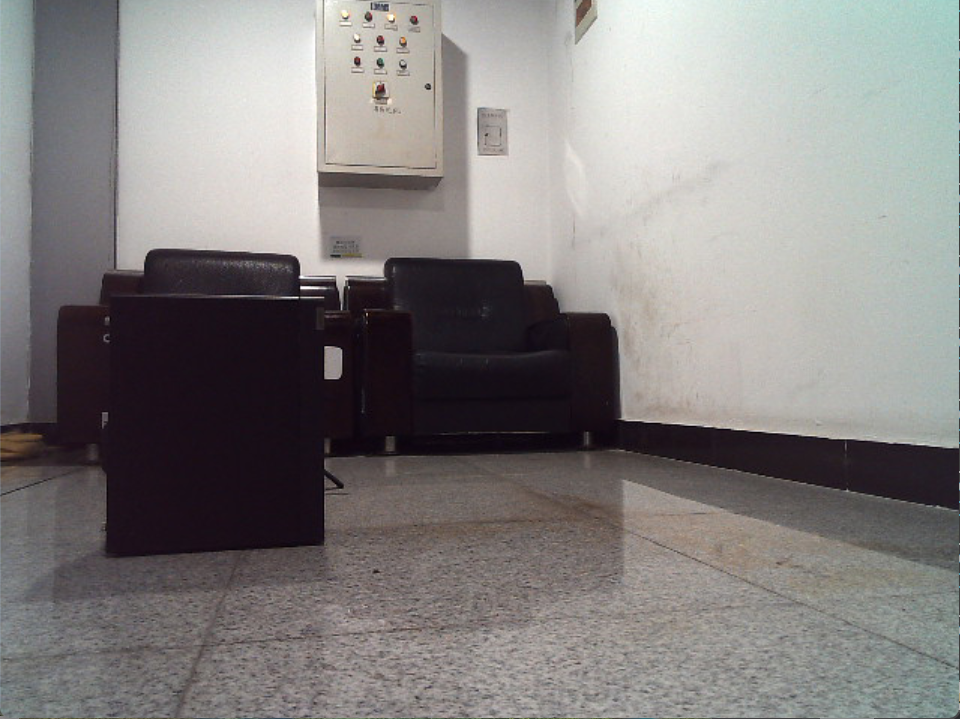

Blockage hurts the link
Furniture and other indoor obstacles can turn an LoS path into an NLoS path, causing attenuation, multipath distortion, and receiver decoding failures.
This project studies how a mobile robot can actively move from blocked indoor viewpoints toward positions that are more favorable for wireless line-of-sight communication. The implementation combines 3D Gaussian Splatting scene reconstruction, multitask visual occlusion perception, and a recurrent PPO policy in Isaac Lab.
This real-robot rollout is embedded directly from the recorded MP4 file. The video is meant to show the deployed JetAuto viewpoint and the practical rollout behavior, not a separately generated animation.
Indoor wireless links can fail when obstacles block the direct path between a transmitter and a receiver. The task is therefore formulated as active visibility recovery: given a partially blocked robot-view observation, learn a policy that moves JetAuto toward viewpoints where the communication target is less occluded and more likely to support LoS transmission.
Furniture and other indoor obstacles can turn an LoS path into an NLoS path, causing attenuation, multipath distortion, and receiver decoding failures.
3DGS dual rendering produces geometry-grounded visibility labels, and the DeepLabv3+ model predicts occlusion state from robot-view RGB images.
The PPO-LSTM policy uses the learned visual feature stream to choose planar motion commands that drive the robot toward the 0-20% low-occlusion success class.
A real indoor scene is captured with multi-view RGB images, reconstructed with 3DGS, aligned to Isaac Lab, and rendered from robot-like viewpoints. The same reconstruction is used to generate visibility supervision, train the multitask perception model, and support recurrent RL training for JetAuto.

The multitask model predicts a visible target mask and a five-class occlusion label while exposing a high-level feature vector. On the main MidOcc test split, the perception model reaches a global Dice score of 0.9515 and 97.28% occlusion classification accuracy, making it usable as the visual front-end for downstream RL training.

The current implementation validates the perception and policy stages in the MidOcc simulation branch, and uses the real JetAuto rollout plus the SDR platform as the bridge toward physical LoS/NLoS validation.

